新宿駅から徒歩6分、エイチクリニック新宿では、トリコモナスの検査・治療を行っています。トリコモナスはかゆみや独特のにおいのあるおりものなど、生活に影響する症状を起こすことがあります。当院は匿名・完全個室・呼び出し番号制で、深夜23時30分まで・土日祝も受診可能。院内処方で内服薬を当日お渡しできます。
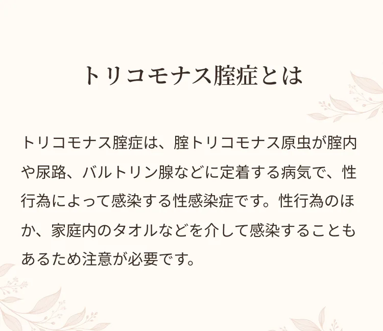
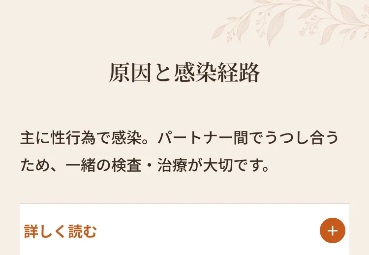
主に性行為によって感染しますが、タオルや下着、浴槽など、湿った環境を介して感染することもあります。パートナー間でうつし合う（ピンポン感染）こともあるため、一緒の検査・治療が大切です。
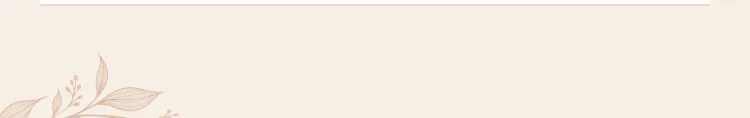
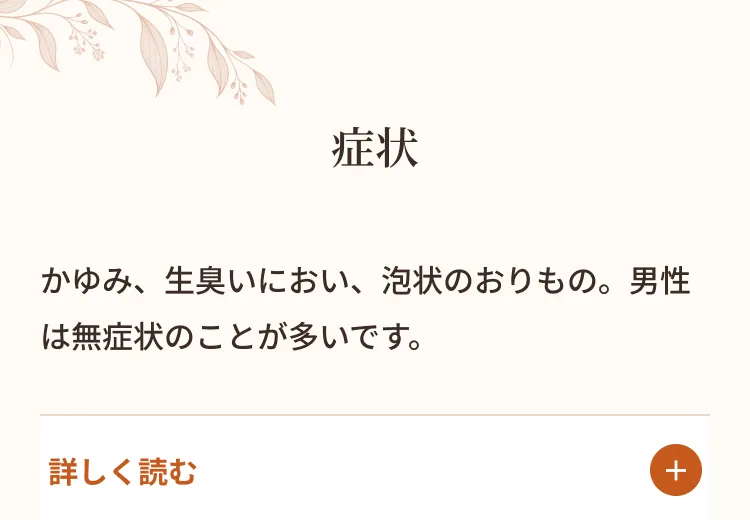
腟のかゆみや独特の異臭を訴える方が多く、性交時の痛みがみられることもあります。生臭いにおいや、泡状でさらさらした淡黄緑色〜淡緑灰色のおりものが特徴です。男性は無症状のことが多いものの、尿道炎を起こすことがあります。

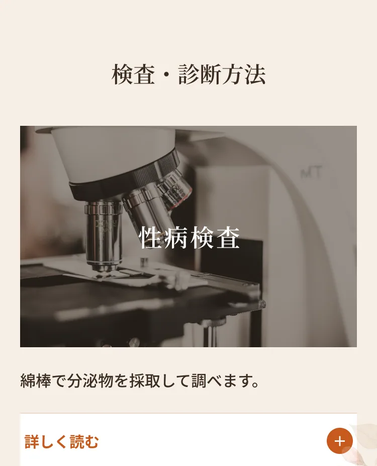
スワブ（綿棒）で分泌物を採取して調べます。症状やご心配の内容に応じて検査方法をご案内します。
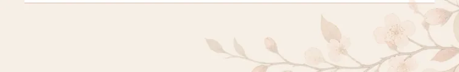
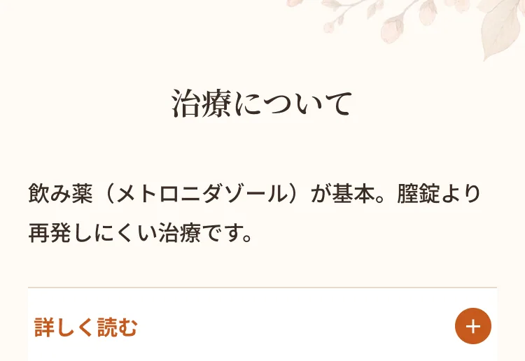
治療はメトロニダゾールの内服が基本です。膣錠による治療もありますが、再発しやすく、尿道や膀胱にも原虫が分布していることがあるため、内服のほうがより効果的です。パートナーも一緒に治療することで再感染を防げます。

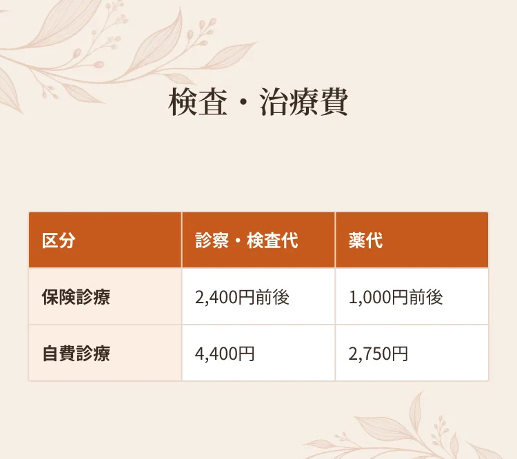
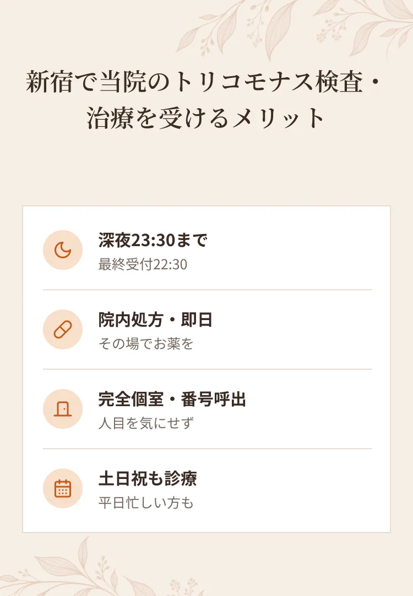
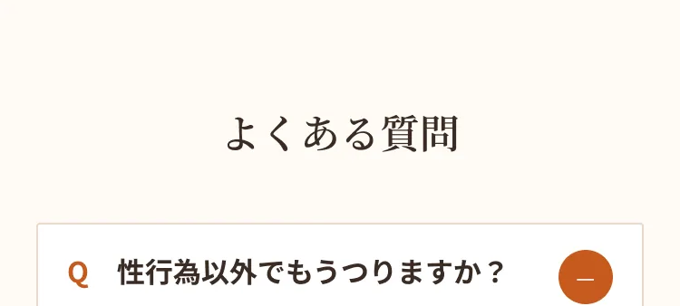
A.タオルや下着など湿った環境を介して感染することがあります。
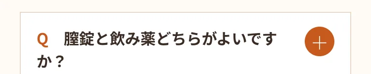
A.再発しにくさの点から内服をおすすめすることが多いです。
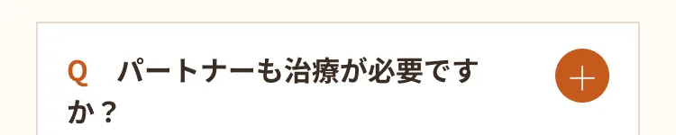
A.再感染防止のため同時の治療を推奨します。
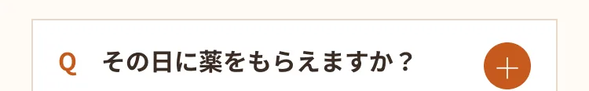
A.院内処方で当日お渡しできます。
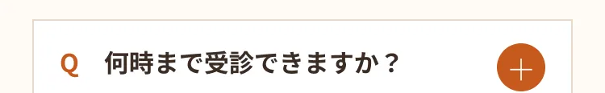
A.深夜23:30まで（最終受付22:30）対応しています。